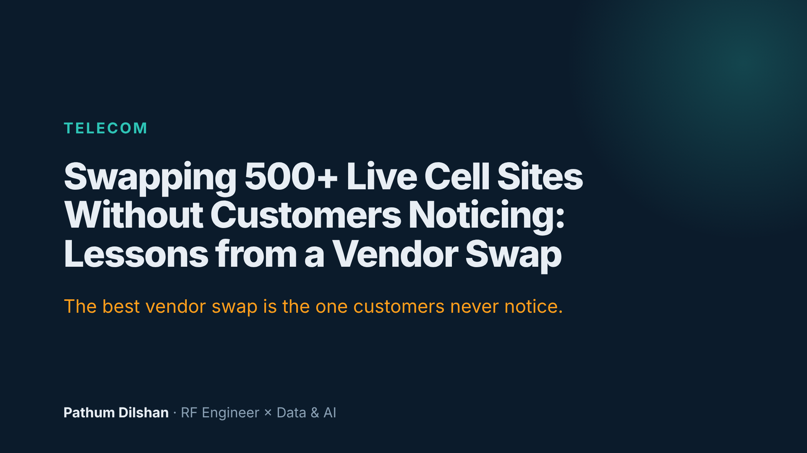

Swapping 500+ Live Cell Sites Without Customers Noticing: Lessons from a Vendor Swap
What I learned supporting a Huawei-to-ZTE swap on a live mobile network

At Mobitel I supported a vendor swap of more than 500 cell sites in the Gampaha area, replacing Huawei radio equipment with ZTE. The goal sounds simple: change the equipment, keep the network working. In practice it's one of the most demanding projects a radio network team can take on, because the network never stops. People are making calls, streaming and paying with their phones while you replace the equipment under them.
Here's what I took away from it.
1. Your baseline is everything
Before a single site is touched, you need a clear picture of how every cell performs today: drop rate, accessibility, handover success, throughput, traffic. Without a solid pre-swap baseline, you can't tell whether a post-swap change is a problem or just normal variation.
2. Same network, different numbers
Different vendors don't always define or count KPIs the same way. After a swap, some numbers move even when the customer experience hasn't changed. Teams that don't know this waste days chasing "degradations" that are really definitional differences, or worse, dismiss real problems as "just the new counters."
(This exact problem later became the starting point for my MSc research on drift-aware anomaly detection.)
3. Neighbours and parameters are where problems hide
Most post-swap issues weren't hardware failures. They were in the configuration: neighbour relations, handover parameters, PCI planning, and the border between swapped and not-yet-swapped areas. The cluster boundary is where two vendors' equipment must hand calls back and forth, and it needs extra attention.
4. Swap in clusters, not at random
Swapping sites in geographic clusters lets you stabilise one area completely before moving on, and keeps the number of vendor boundaries manageable. Each cluster becomes a small, repeatable project with a clear before-and-after.
5. The first 72 hours decide everything
Most issues show up within a few days of a cluster going live. Close KPI monitoring in that window, with a quick way to act on what you find, is what keeps downtime low. Automating that monitoring made a big difference: you can't watch hundreds of cells by hand.
6. It's a people project as much as a technical one
Field teams, the vendor, operations, planning and optimization all have to move in step. Clear communication about what's changing tonight, what to watch tomorrow and who to call when something breaks matters as much as any parameter.
The result
The swap went ahead with minimum service downtime. Across my optimization work at Mobitel, I've also helped reduce call drop rate by 15% and increase downlink throughput by 20% across 250+ sites. That came from the same habits: measure carefully, change deliberately and watch closely.
The best vendor swap is the one customers never notice.
Pathum Dilshan is an RF & Network Planning Engineer at Mobitel, Sri Lanka, and an MSc Data Science & AI student at the University of Moratuwa. He writes about telecom, data and AI. Connect on LinkedIn or visit pmpdilshan.github.io.